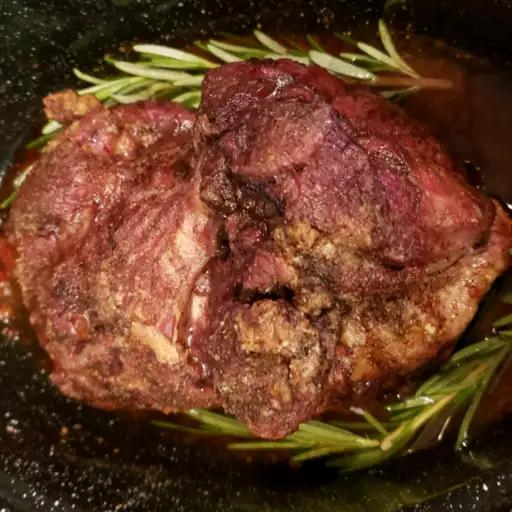

Roasted Lamb

Description
Learn how to cook a leg of lamb with this delicious leg of lamb recipe. Cooking peeled potatoes in the pan around the roast is yummy. The only other things you need are gravy made from the pan drippings and a fresh vegetable.
Ingredients
- 5 pounds leg of lamb
- 4 cloves garlic, sliced
- salt and ground black pepper to taste
- 2 tablespoons fresh rosemary
Steps
- Preheat the oven to 350 degrees F (175 degrees C).
- Cut deep slits on the top of leg of lamb every 3 to 4 inches; push slices of garlic down into the slits. Generously season with salt and pepper. Place lamb on a roasting pan; arrange several sprigs of fresh rosemary under and on top of the lamb.
- Roast in the preheated oven for 1 3/4 to 2 hours, or until an instant-read thermometer inserted into the center of the lamb reads at least 135 degrees F (57 degrees C) for medium-rare to medium doneness.
- Cover lamb with aluminum foil and let rest for at least 10 minutes before carving.